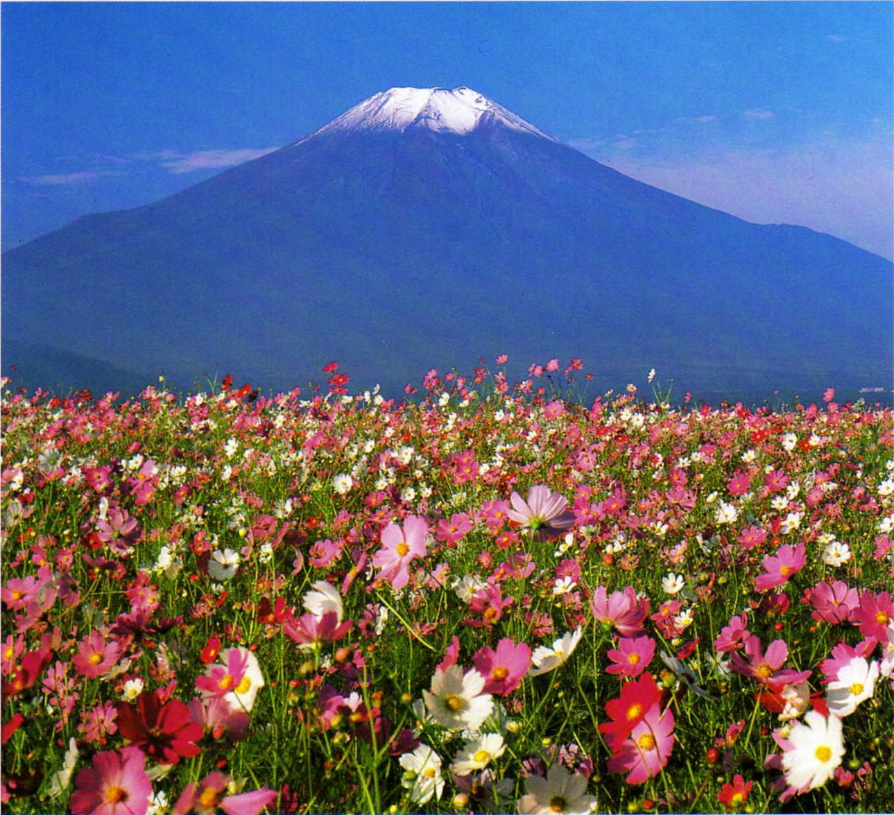
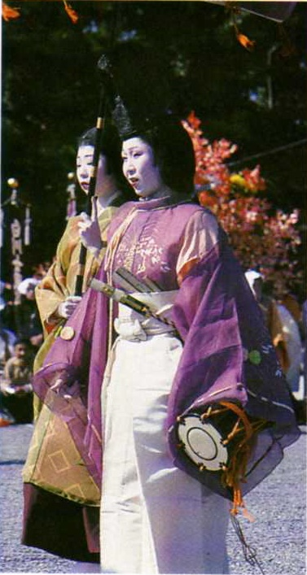

- Традиционным национальным спортом в Японии считают сумо. Стать борцом сумо может лишь тот, кто весит не менее 170 кг.
- Девятого августа 1945 года в результате американской атомной бомбардировки был разрушен город Нагасаки. Тремя днями ранее эта же участь постигла Хиросиму. Только в Нагасаки жертвами атомной бомбы стали 80 000 человек. После этого Япония капитулировала.
- Очень сложный для изучения японский язык имеет три разные системы письменности: катакана (для транслитерации иностранных заимствований и имен), хирагана и заимствованное в Китае иероглифическое письмо каньи, в котором используется более 1850 знаков.
- Кабуки — традиционный японский национальный театр, в котором все роли, включая женские, исполняют только мужчины. Артистов, играющих в кабуки исключительно женские роли, в Японии называют оннагата.
ЯПОНИЯ
Чудеса электроники и цветы сакуры

Величественная Фудзияма — священная гора японцев. Этот символ островной империи считается красивейшим вулканом мира.
ПОСЛЕДНЯЯ ИМПЕРИЯ НА ЗЕМЛЕ
Япония лежала в руинах, когда летом 1945 года ее жители впервые услышали по радио голос своего императора: Хирохито капитулировал перед американцами. Для миллионов японцев это означало не только окончание Второй мировой войны, в результате которой города Хиросима и Нагасаки превратились в выжженную пустыню, но и крушение иллюзий о божественном происхождении их императора.
- Город Токио
- Горнолыжный комплекс близ Саппоро.
- Термальные источники в Беппу.
- Вулкан Фудзияма.
- Императорская резиденция в Киото.
- Официальное название: Японская Империя.
- Столица: Токио (11.7 млн. чел).
- Крупнейшие города: Иокогама, Осака, Кобе, Нагоя, Саппоро, Киото.
- Денежная единица: йена
- Религии: синтоизм, буддизм.
- Язык: японский.
Очень разнообразный, умеренный, влажный и дождливый. Средняя температура в Токио: в январе — 5*С, в июле — 26*С
Миф о возникновении японской императорской династии восходит ко времени правления императора Дзимму — как гласит легенда, в 660 году до н.э. он был возведен на престол богиней солнца Аматерасу. Позднее вполне земные преемники Дзимму построили храмовый город Киото. В прошлом — временная обитель японских властителей, Киото более 1000 лет оставался столицей страны и резиденцией императоров, которая в эпоху Средневековья потрясала воображение неслыханным блеском и великолепием двора. В то же время преимущественно земледельческая страна все больше нищала и удерживалась в повиновении только военными дружинами японских феодалов. Вскоре самураи, возглавлявшие эти дружины, взяли государство под свой контроль, в то время как император восседал в Киото, словно в золотой клетке. Предводители самураев, сёгуны, стремились изолировать Японию от любого иноземного влияния. Только в 1853 году островная империя вынуждена была приоткрыть свои границы и уступить торгово-экономической экспансии со стороны американцев. Спустя еще 14 лет последний сёгун отрекся от власти в пользу 15-летнего императора Муцухито. Именно этот момент считается временем возникновения современной Японии. Нынешний император Акихито, правнук Муцухито, исполняет только представительские функции и, несмотря на официальный титул «Сын неба», давно утратил свой божественный ореол.
- Площадь: 377 873 км2
- Население: 127 333 002чел. (оценка 2010 г.).
- Самая высокая точка: вулкан Фудзияма (3 776 м).
- Побережье: 29 751 км
Промышленность: мировой лидер по производству автомобилей, мотоциклов, бытовой электроники и офисной техники. Правда, многие предприятия расположены уже за пределами Японских островов. Импорт нефти (прежде всего из ОАЭ) и угля из Австралии. Сельское хозяйство: рисоводство, овощеводство. Рыболовство: крупнейшая рыболовецкая отрасль в мире. Японские морепродукты экспортируются во многие страны мира.

Гейши умеют развлечь гостей умной беседой, танцами и пением. Этому молодых женщин учат в специальных школах.
ВЕЛИКИЙ ПРОРЫВ СТРАНЫ ВОСХОДЯЩЕГО СОЛНЦА
Япония — это страна противоречий: величавое спокойствие девственной природы гор соседствует с пульсирующим ритмом мегаполисов, где бьется сердце третьей по размеру экономики мира.
С борта самолета, пролетающего над Японскими островами в ясную погоду, открывается чудесный вид: на фоне кристально чистой глади Тихого океана ясно просматриваются очертания четырех главных островов Японии: Хоккайдо, Хонсю, Сикоку и Кюсю. Отсюда, сверху, особенно отчетливо видно, что Япония — это горная страна с огромными лесными массивами и более чем 200 вулканами, аждый четвертый из которых сохраняет свою активность. Расположенная на островах империя лежит на стыке двух тектонических плит, Филиппинской и Тихоокеанской. С научной точки зрения это не более чем сухая констатация факта, но для Японии такое географическое положение значит многое. Из-за того что острова расположены в сейсмически неспокойном регионе, в этой стране ежегодно происходит около 1500 землетрясений. Некоторые из подземных толчков едва ощутимы, другие же приводят к страшным катастрофам. В 1995 году мощное землетрясение почти стерло с лица земли большую часть индустриального города Кобе, 250 тысяч человек остались без крова. Для нации, благополучие которой строится на неограниченном промышленном росте, это было настоящим шоком. Тот, кто полагает, что в Японии достаточно запасов сырья, сильно ошибается. Это островное государство почти не располагает собственными природными ресурсами. Тем более невероятным кажется его прорыв в число наиболее процветающих индустриальных стран мира. Сегодня, покупая новую видеокамеру, стереосистему или компьютер, вы с большой вероятностью приобретете продукцию Страны восходящего солнца. Все предприятия Японии расположены в крупных индустриальных центрах, три четверти всего населения страны проживают в городах. Уединением и покоем японской природы наслаждаются лишь буддийские монахи и жрецы синто. Что же касается горожан, то для них эти уединенные районы представляются просто пустыней.